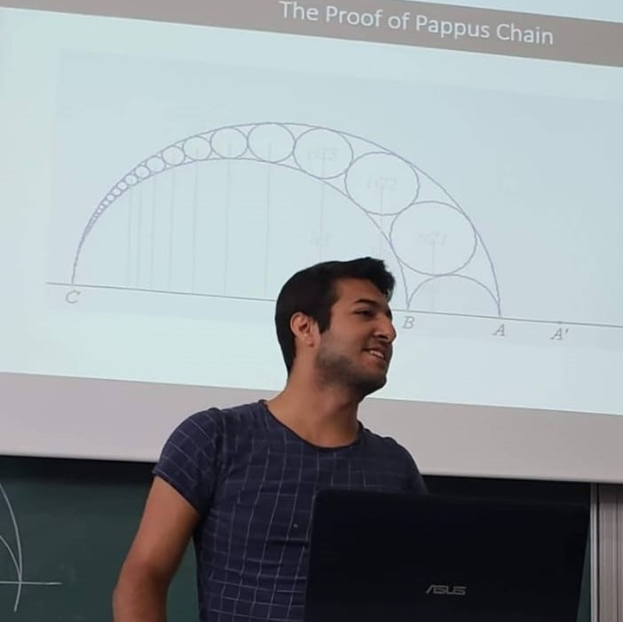

<!DOCTYPE html>
<html>
	<head>
		<title>Mehmet Kırtışoğlu - Research</title>
		<link rel="stylesheet" href="style.css">
		<meta name="viewport" content="width=device-width, initial-scale=1.0">
	</head>
</html>

<body>
<header>
<a href="index.html"><button>About</button></a>
<a href="CV.html"><button>CV</button></a>
<a href="Research.html"><button>Research</button></a>
<a href="Teaching.html"><button>Teaching</button></a>
</header>

<div class="div-profile">
	<div class="div-profile-photo">
	<center></center>
	</div>

	<div class="div-profile-info">
		<center><h2>Mehmet Kırtışoğlu</h2>
		
		<a href="http://www.fen.bilkent.edu.tr/~cvmath/" target="blank"></a><br>
		Bilkent University Department of Mathematics 06800 Ankara, Türkiye<br><br>
		
		<b>Contact me:</b><br><br>
		<a href="mailto:m.kirtisoglu@bilkent.edu.tr" target="blank"></a><br>
		E-mail<br><br>

		<a href="https://twitter.com/mehmetkirtiss" target="blank"></a><br>
		Twitter<br><br>

		<a href="https://www.instagram.com/mehmetkirtiss/" target="blank"></a><br>
		Instagram</center>
	</div>
</div>

<div class="div-main">
	<div class="child">
		<h4>About My Thesis</h4>
	<p> Currently, I am writing a document which is a self-contained and detailed cover of my master's studies under the
	supervision of Prof. Ergün Yalçın at Bilkent University. As it includes the basics of topology,
	homological algebra, and category theory, it also dives into the elaborate contents of algebraic
	topology that I have studied so far in my master's. Hence, it forms a kind of skeleton for my master's
	thesis. Other than the lecture notes that I have been taking in various classes since my
	undergraduate, there are also some books and articles that I utilized to gather this document. When I share the document and the necessary references
	on this page, I hope that it enlightens my studies in a proper way and helps those students who are at
	the stage of aiming the study of algebraic topology.</p>
	<h4> Contributed Talks </h4>
<ol>
	<li> Bilkent Math Graduate Seminars, October 2023, “Thomason’s Homotopy Colimit Theorem” <a href="https://youtu.be/3qkHdmr40bo?si=mRB4Ql0Tzi19ZyLz" target="blank">(video)</a></li>
	<li> Bilkent Math Graduate Seminars, December 2022, “Simplicial Quantum Contextuality” </li>
	<li> DRP Turkey Symposium, Aug 2022, <a href="DRP.pdf" target="blank">“Seifert Van Kampen Theorem and Its Applications” </a></li>
  	<li> Network Oriented Dynamics and Data Science Research Group, Jul 2021, <a href="GS.pdf" target="blank">“Generalized Synchronization of Chaos” </a></li>
  	<li> Bahar Mathematics Meeting VI, October 2019, “An Algebraic Topological Proof of the Fundamental Theorem of Algebra” </li>
  	<li> Bahar Mathematics Meeting IV, October 2018, “An Introduction to Modern Geometry (Inversion)” </li>
</ol>
	<h5> My Senior Project in Bachelor's Degree: <a href="MATH491.pdf" target="blank">“Reconstruction of Networks of Chaotic Systems” </a></h5>
	<hr>
	<br><br>
	<p>Last modified:</p>
	<p id="demo"></p>
	
	<script>
	let text = document.lastModified;
	document.getElementById("demo").innerHTML = text;
	</script>
		
	</div>
		
</div>

</body>
